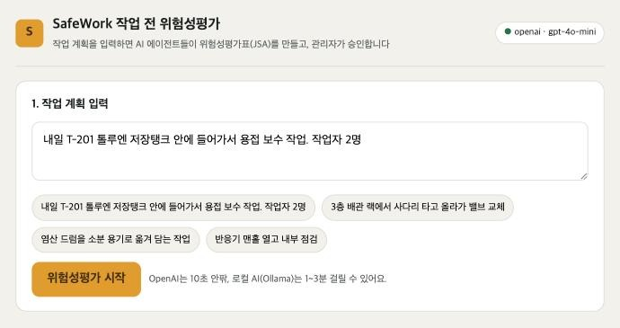
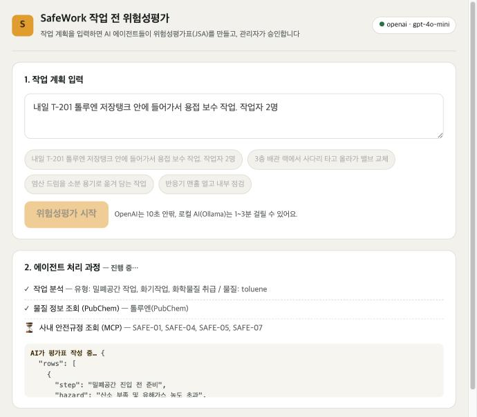
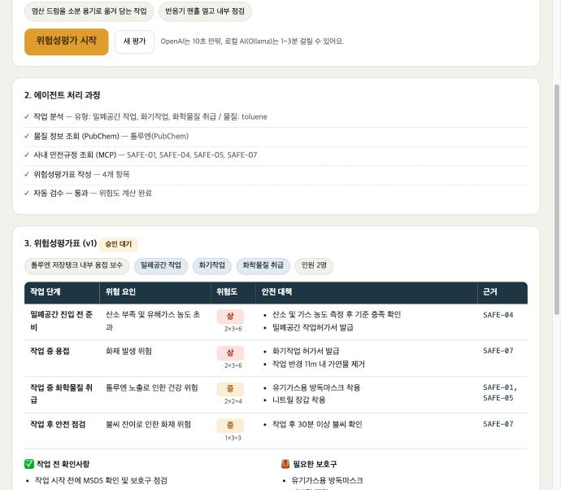
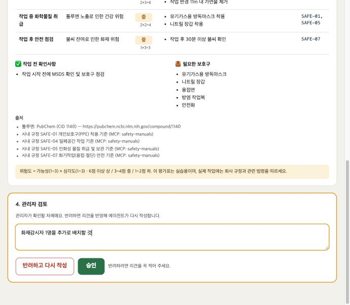
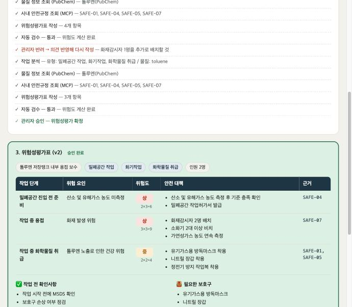

작업 계획을 입력하면 AI 에이전트들이 근거가 달린 위험성평가표를 만들어 주는 서비스
| 소속 | SKALA 광주 2반 |
|---|---|
| 고유번호 | G041 |
| 이름 | 김세빈 |
| 소스 코드 | github.com/sebin2365/mini-project |
※ 사내 안전규정 8종은 실습용으로 만든 가상 데이터임
| 기존 방식의 문제점 | 해결 방법 |
|---|---|
| 물질 정보(MSDS)와 사내 규정을 사람이 직접 찾아야 해서 시간이 오래 걸림 | 에이전트가 PubChem과 사내 규정 서버(MCP)를 자동으로 조회 |
| 예전 양식을 복사해서 쓰다 보니 위험 요인이 빠지기 쉬움 | 작업 유형을 먼저 분석하고, 유형마다 위험 요인을 하나 이상 넣도록 함 |
| 안전 대책의 근거가 분명하지 않음 | 모든 대책에 근거 규정 번호와 출처를 표시 |
| 위험도 판단이 사람마다 다름 | 위험도(가능성 × 심각도)를 코드가 계산 |
| AI 결과를 그대로 쓰기에는 위험함 | 관리자가 승인해야 확정되고, 반려하면 의견을 반영해 다시 작성 |
<표 1> 기존 방식의 문제점과 해결 방법
(○ 적용, △ 일부 적용, × 미적용)
| 항목 | 적용 | 내용 |
|---|---|---|
| Multi-Agent / LangGraph | ○ | 역할이 다른 에이전트 5개로 분리 (작업 분석, 물질조회, 규정조회, 평가표 작성, 검수). LangGraph로 흐름 구성 |
| 동적 재계획 | ○ | 작업 계획이 아니면 종료, 검수 불합격 시 재작성, 관리자 반려 시 의견을 반영해 재실행 |
| Supervisor 패턴 | △ | 감독 에이전트 대신 정해진 순서 + 조건부 분기로 단순하게 구성 |
| MCP | ○ | 사내 안전규정 MCP 서버 직접 구현. Tool 2개(search_manuals, list_manuals), Resource 1개(규정 원문) |
| MCP Prompt | × | 미적용 |
| RAG | △ | 검색한 규정을 AI 지시문에 넣는 방식은 적용. 단, Vector DB가 아닌 키워드 검색 |
| 모듈화 | ○ | 에이전트(agents), 도구(tools), MCP 서버(mcp_server), 화면(frontend)으로 분리 |
| 의존성 주입 | ○ | MCP 연결을 그래프에 전달. 환경변수 하나로 LLM 교체 (가짜 / Ollama / OpenAI) |
| 테스트 | ○ | 가짜 LLM으로 전체 흐름 자동 점검 23개 항목 통과 |
| LangSmith | ○ | 에이전트와 LLM 호출 기록을 LangSmith에 저장 |
| LLM-as-a-Judge | × | 미적용. 대신 코드 검수로 형식과 근거를 확인 |
<표 2> 요구 항목별 적용 현황
<그림 1> 전체 구조도
| 순서 | 에이전트 | 하는 일 | 사용 도구 |
|---|---|---|---|
| ① | 작업 분석 | 작업 유형, 물질, 인원 추출. 놓친 것은 키워드로 한 번 더 확인 | 작은 LLM |
| ② | 물질조회 | 물질의 위험 문구와 신호어 조회 | PubChem API |
| ③ | 규정조회 | 작업 유형별 사내 규정 검색 | MCP 서버 |
| ④ | 평가표 작성 | 조사 결과만 근거로 평가표 작성 | 큰 LLM |
| ⑤ | 자동 검수 | 위험도 계산, 근거 없는 규정 번호 삭제, 형식 검사 | 코드 (AI 아님) |
<표 3> 에이전트별 역할





| 항목 | 결과 |
|---|---|
| 자동 점검 (가짜 LLM) | 23개 항목 모두 통과 |
| OpenAI(gpt-4o-mini) 실행 | 평가표 1건당 약 5~10초 |
| PubChem 조회 | 톨루엔, 벤젠, 염산 정상 조회 |
| LangSmith | 실행 기록 저장 확인 |
<표 4> 테스트 결과
처음에는 AI에게 "위험성평가표를 써줘"라고 하면 될 줄 알았는데, 근거가 없는 대책이나 없는 규정 번호를 만들어 내는 경우가 있었습니다. 조사하는 에이전트와 작성하는 에이전트를 나누고, 코드로 검수하고, 마지막은 사람이 승인하도록 만들면서 멀티 에이전트를 쓰는 이유를 이해할 수 있었습니다.
수업에서 배운 LangGraph, MCP, FastAPI, LangSmith를 하나의 서비스로 연결해 보면서 각 기술이 어떤 역할을 하는지 알게 되었고, 안전처럼 실수가 큰 분야일수록 AI가 모든 것을 결정하지 않도록 설계하는 것이 중요하다고 느꼈습니다.
bash sh/setup.sh # 처음 한 번 (설치) bash sh/run_backend.sh openai # 서버 실행 bash sh/run_frontend.sh # 화면 실행 → http://localhost:5173